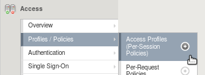
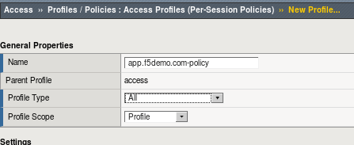
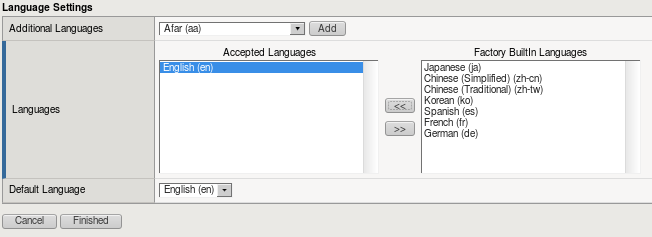
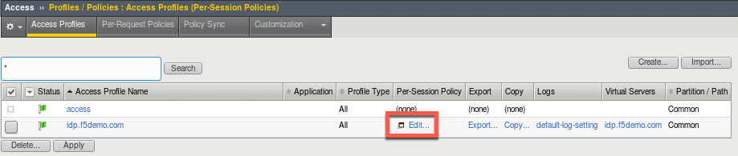
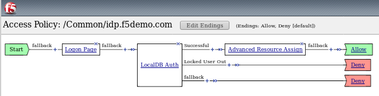
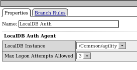
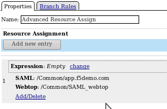

F5 Identity and Access Management Solutions > Class 4: SAML Identity Provider (IdP) Lab > Module 1: SAML Identity Provider Source | Edit on
Lab 1.6: Configure the Access Profile¶
The Access Profile defines the characteristics of how we authenticate and authorize a user using the BIG-IP platform. It controls things like what type logon page is presented to the user (if any at all), what language any dialog messages should be presented in, and – most importantly – the flow through which we limit access and assign resources.
F5 BIG-IP Access Policy Manager supports two types of Access Policies:
- Per-Session access policies
- Per-Request access policies
The difference centers around how frequently a policy is evaluated, either once at time of initial logon or after every single HTTP request.
Task 1 - Create the Access Profile Object¶
Navigate to
Click the + sign

Configure the following settings:
Property Value Name idp.f5demo.com-policy Profile Type All Languages English (en) 

Click the Finished button.
Task 2 - Configure the Access Policy Using the Visual Policy Editor¶
The Visual Policy Editor (VPE) is where the administrator configures the heart of the Access Policy. Using a flow chart methodology, it is easy to create robust policies without adding burdensome management overhead. Even significant policies can be easily read and understood.
- Open the Visual Policy Editor
Navigate to
Click the Edit… link and the VPE will open in a new window

We’ll build a policy like the one below:

- Add a Logon Page
- Click on the + link after the Start node
- Select the Logon Page tab and click the Add Item button
- Use the default settings and click the Save button
- Add an Authentication Mechanism
- Click on the + link after the Logon Page node
- Select the Authentication tab and select LocalDB Auth then click the Add Item button
- Configure the following settings:
Property Value LocalDB Instance /Common/agility 
Note
The administrator can select from a variety of Authentication Mechanisms, including Active Directory and LDAP, among others. In this lab, the LocalDB Auth has been pre-configured.
- Click the Save button.
- Add Advanced Resource Assign
- Click on the + link on the successful branch after the LocalDB Auth node
- Select the Assignment tab and select Advanced Resource Assign then click the Add Item button
- Click the Add New Entry button
- Click the Add/Delete link
- Select the Webtop tab and select the /Common/saml_webtop
- Select the SAML tab and select the /Common/app.f5demo.com
- Click the Update button, then click the Save button

- Change the ending to Allow
- Click on the Deny ending after the Advanced Resource Assign
- Select Allow
- Click Save
- Apply Policy Changes
- Click the Apply Access Policy in top left next to the F5 red ball
- Close browser tab